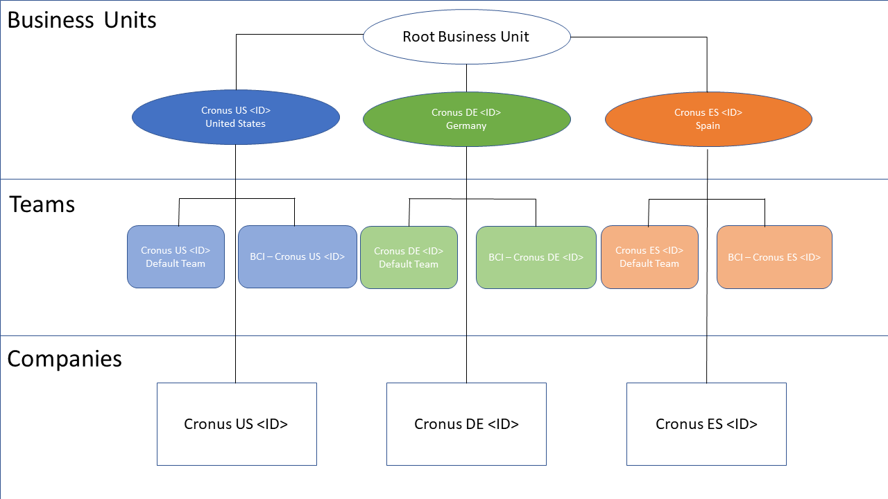
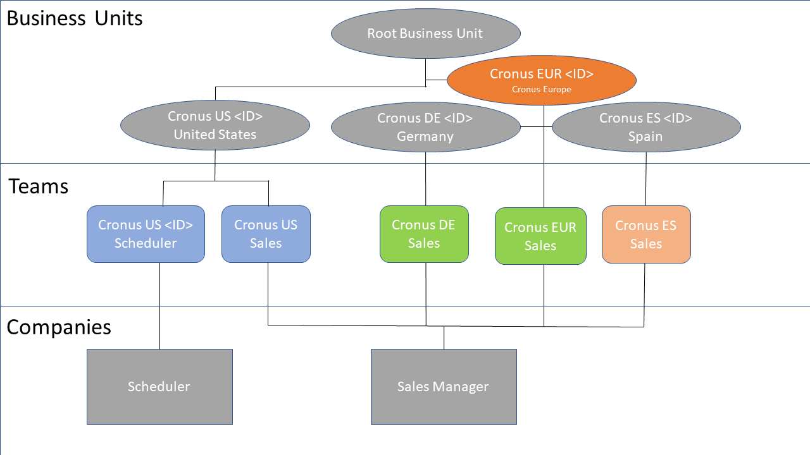

Datenbesitzmodelle für die Synchronisierung
Dataverse erfordert, dass Sie einen Eigentümer für die von Ihnen gespeicherten Daten angeben. Weitere Informationen finden Sie unter Arten von Tabellen in der Power Apps-Dokumentation. Wenn Sie die Integration zwischen Dataverse und Business Central einrichten, müssen Sie Benutzer oder Team-Besitz für synchronisierte Datensätze auswählen. Aktionen, die mit diesen Datensätzen ausgeführt werden können, können auf Benutzerebene gesteuert werden.
Team-Eigentum
In Business Central ist ein Unternehmen eine juristische und geschäftliche Tabelle, die Möglichkeiten zur Sicherung und Visualisierung von Geschäftsdaten bietet. Benutzer arbeiten immer im Kontext eines Unternehmens. Diesem Konzept kommt Dataverse am nächsten, da die Geschäftseinheitstabelle keine rechtlichen oder geschäftlichen Auswirkungen hat.
Da Geschäftseinheiten keine rechtlichen und geschäftlichen Auswirkungen haben, können Sie keine eins-zu-eins (1:1)-Abbildung erzwingen, um Daten zwischen einem Unternehmen und einer Geschäftseinheit zu synchronisieren, weder einseitig noch bidirektional. Um die Synchronisierung zu ermöglichen, geschieht, wenn Sie die Synchronisierung für ein Unternehmen in Business Central aktivieren, Folgendes in Dataverse:
- Wir schaffen eine Unternehmenstabelle, die der Unternehmenstabelle in Business Central entspricht. Der Name des Unternehmens wird mit dem Suffix „BC Unternehmens-ID“ versehen. Zum Beispiel Cronus International Ltd. (93555b1a-af3e-ea11-bb35-000d3a492db1).
- Wir legen eine Standard-Geschäftseinheit an, die den gleichen Namen wie die Unternehmenseinheit hat. Zum Beispiel Cronus International Ltd. (93555b1a-af3e-ea11-bb35-000d3a492db1).
- Wir legen ein separates Eigentümerteam mit demselben Namen wie das Unternehmen an und ordnen es der Geschäftseinheit zu. Dem Namen der Gruppe wird „BCI -“ vorangestellt. Beispielsweise BCI - Cronus International Ltd. (93555b1a-af3e-ea11-bb35-000d3a492db1).
- Datensätze, die erstellt und mit Dataverse synchronisiert werden, werden dem „BCI-Besitzer“-Team zugeordnet, das mit dem Geschäftsbereich verbunden ist.
Hinweis
Wenn Sie ein Unternehmen in Business Central umbenennen, werden die Namen des Unternehmens, des Konzernmandanten und des Teams, die wir automatisch in Dataverse erstellen, nicht aktualisiert. Da nur die Unternehmens-ID für die Integration verwendet wird, wirkt sich dies nicht auf die Synchronisierung aus. Wenn die Namen übereinstimmen sollen, müssen Sie das Unternehmen, den Konzernmandant und das Team in Dataverse aktualisieren.
Die folgende Abbildung zeigt ein Beispiel für diese Dateneinrichtung in Dataverse.

In dieser Konfiguration befinden sich Datensätze, die sich auf die Firma Cronus US beziehen, im Besitz eines Teams, das mit dem Cronus US-Geschäftsbereich in Dataverse verbunden ist. Benutzer, die auf diese Geschäftseinheit über eine Sicherheitsrolle zugreifen können, die in Dataverse auf Sichtbarkeit auf Geschäftseinheitsebene eingestellt ist, können nun diese Datensätze sehen. Das folgende Beispiel zeigt, wie Teams eingesetzt werden können, um den Zugriff auf diese Datensätze zu ermöglichen.
- Die Rolle des Vertriebsleiters wird den Mitgliedern des US-Vertriebsteams von Cronus zugewiesen.
- Benutzer, die die Rolle Vertriebsleiter haben, können auf Kontoaufzeichnungen für Mitglieder derselben Geschäftseinheit zugreifen.
- Das US-Verkaufsteam von Cronus ist mit der bereits erwähnten Geschäftseinheit von Cronus US verbunden. Mitglieder des Cronus US-Verkaufsteams können jedes Konto sehen, das dem Cronus US-Benutzer gehört, das von der Cronus US-Firmentabelle in Business Central gekommen wäre.
Die 1:1-Abbildung zwischen Geschäftseinheit, Unternehmen und Team ist jedoch nur ein Ausgangspunkt, wie in der folgenden Abbildung gezeigt.

In diesem Beispiel wird eine neue EUR (Europa) Stamm-Geschäftseinheit in Dataverse als Muttergesellschaft sowohl für Cronus DE (Gernamy) als auch für Cronus ES (Spanien) angelegt. Der EUR-Geschäftsbereich ist nicht mit der Synchronisation verbunden. Es kann jedoch Mitgliedern des EUR-Verkaufsteams Zugriff auf Kontodaten sowohl in Cronus DE als auch in Cronus ES geben, indem die Datensichtbarkeit auf Übergeordnete/untergeordnete GE auf die zugehörige Sicherheitsrolle in Dataverse gesetzt wird.
Die Synchronisation bestimmt, welches Team Datensätze besitzen soll. Dies wird durch das Feld Standardeigentümerteam in der BCI-Zeile gesteuert. Wenn ein BCI-Datensatz für die Synchronisierung aktiviert wird, erstellen wir automatisch die zugehörige Geschäftseinheit und das Eigentümerteam (falls noch nicht vorhanden) und legen das Feld Standardeigentümerteam fest. Wenn die Synchronisierung für eine Tabelle aktiviert ist, können Administratoren das besitzende Team ändern, aber es muss immer ein Team zugewiesen werden.
Hinweis
Die Aufzeichnungen werden schreibgeschützt, nachdem eine Firma hinzugefügt und gespeichert wurde, also achten Sie darauf, die richtige Firma zu wählen.
Auswahl einer anderen Geschäftseinheit
Sie können die Auswahl des Konzernmandanten ändern, wenn Sie das Modell „Team-Eigentum“ verwenden. Wenn Sie das Modell „Personenbesitz“ verwenden, wird immer der Standard-Konzernmandant ausgewählt.
Wenn Sie einen anderen Konzernmandanten auswählen, z. B. einen, den Sie zuvor in Dataverse angelegt haben, behält er seinen ursprünglichen Namen. Das heißt, es wird nicht mit dem Suffix der Firmen-ID versehen. Wir werden ein Team zusammenstellen, das die Namenskonvention anwendet.
Beim Ändern eines Konzernmandanten können Sie nur die Konzernmandanten auswählen, die eine Ebene unter dem Stamm-Konzernmandanten liegen.
Eigentum der Person
Wenn Sie das Modell Personenbesitz wählen, müssen Sie jeden Verkäufer angeben, der neue Datensätze besitzen wird. Der Konzernmandant und das Team werden wie im vorherigen Abschnitt Team-Besitz beschrieben angelegt.
Der Standard-Konzernmandant wird verwendet, wenn das Modell „Personenbesitz“ ausgewählt ist, und Sie können keinen anderen Konzernmandanten auswählen. Das Team, das dem Standard-Konzernmandanten zugeordnet ist, besitzt Datensätze für allgemeine Tabellen, z. B. die Produkttabellen, die nicht mit bestimmten Verkäufern verknüpft sind.
Wenn Sie Verkäufer in Business Central mit Benutzern in Dataverse koppeln, fügt Business Central den Benutzer dem Standardteam in Dataverse hinzu. Sie können überprüfen, ob Benutzer hinzugefügt wurden, indem Sie sich die Spalte Standardteam-Mitglied auf der Seite Benutzer - Common Data Service ansehen. Wenn der Benutzer nicht hinzugefügt wurde, können Sie ihn manuell mithilfe der Aktion Gekoppelte Benutzer dem Team hinzufügen hinzufügen. Weitere Informationen finden Sie unter Synchronisieren von Daten in Business Central mit Dataverse.
Siehe auch
Kostenlose E-Learning-Module für Business Central finden Sie hier